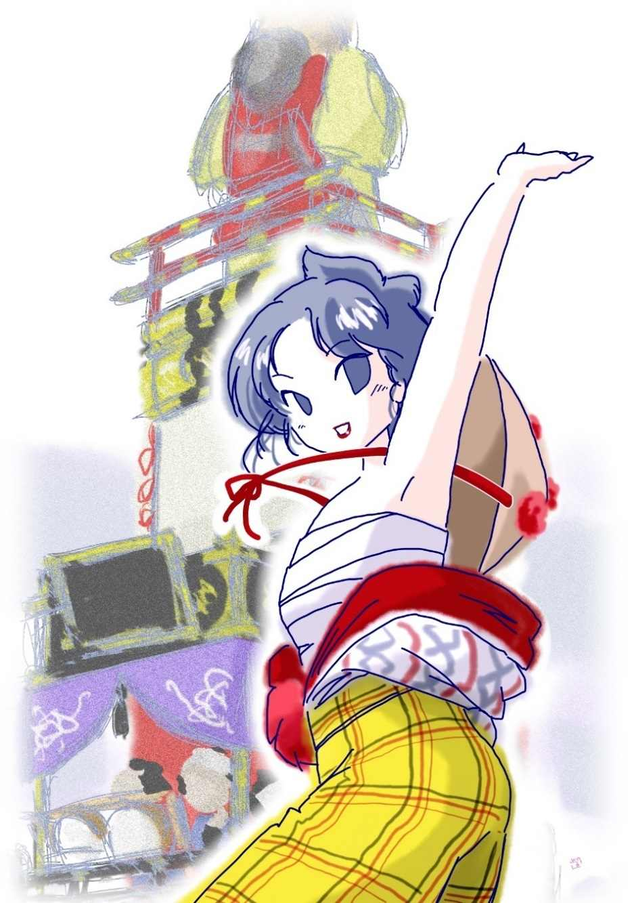

| 赤い紐: 銭形平次捕物全集第17話 (銭形倶楽部) | |
| 野村胡堂 | |
| ZENIGATA CLUB (2018) | |
一
神田祭は九月十五日、十四日の宵宮 は、江戸半分煮えくり返るような騒ぎでした。
御城内に牛に牽 かれた山車 が練り込んで、将軍の上覧に供えたのは、少し後の事、銭形の平次が活躍した頃は、まだそれはありませんが、天下祭り又は御用祭と言って、江戸ッ児らしい贅を尽したことに何の変りもありません。
銭形の平次も、御多分に漏れぬ神田っ子でした。一と風呂埃を流してサッと夕飯を掻込むと、それから祭の渦の中へ繰り出そうという矢先、------
「親分、た、大変」
鉄砲玉のように飛込んで来たのは、例のガラッ八の八五郎です。
「ああ驚いた。お前と付合っていると、寿命の毒だよ。又按摩 が犬と喧嘩しているとか何とか言うんだろう」
そう言いながらも平次は、たいして驚いた様子もなく、ニヤリニヤリとこの秘蔵の子分の顔を眺めやりました。
全くガラッ八は、少し調子ッ外れですが、耳の早いことは天稟 で、四里四方のニュースは、一番先きに嗅ぎ付けて来てくれます。
「そんな馬鹿な話じゃねえ、正真正銘の大変だ、親分驚いちゃいけねえ」
「驚きもどうもしないよ」
「金沢町のお春------あの油屋の一粒種の小町娘が、夕方から見えなくなって大騒ぎだ。ちょいと行って見てやっておくんなさい」
「馬鹿だな。お前は。三日も帰らなきゃア騒ぐのももっともだが、夕方から見えなくなったのなら、まだ一と刻とも経っちゃいめえ。今頃は雪隠 から出て手を洗っているよ、行ってみな」
平次は相手にもしませんが、どうしたことか、ガラッ八は妙に絡 み付いて動きません。
「ところが、町内中の雪隠も押入も皆んな探したんだ」
「何だってそんな大 袈 裟 なことをするんだ」
「だから大変なんだ、親分、お春坊は二日ばかり前から、------祭の済むまでには、私はキッと殺されるだろう------って言っていたんだそうだ」
「えッ」
「そればかりじゃねえ、日が暮れて間もなく、誰か男の人がお春の厭がるのを無理に引っ張って、聖堂裏の森ん中へ入ったのを見た者があるんだ」
「誰が見たんだい」
「困ったことに町内の樽 御輿 を担いでいる小若連中の一人だが、お祭へ夢中になっているから、その男の人相を突き止めなかった。お揃 いを着て、手拭で頬冠りをしていたことだけは確かだが------」
「よし、行って見よう。お春坊は無事平穏に生きながらえるにしちゃ少し綺麗過ぎらア、こいつは成程、臭い事があるかも知れないよ」
平次はガラッ八を促し立てて、一と走り金沢町へ、何やら第六感をおののか せながら飛んで行きました。
金沢町の油屋の一人娘お春というのは、今年十九の厄 、あまり綺麗過ぎるのと、美人に有りがちの気位の高いのが災し て、その頃にしては縁遠い方でした。もっとも、早くから許した仲の男があるとも言われ、兎 に角 、噂の種の尽きない性質 の娘だったのです。
二
平次が金沢町へ駆け付けた時は、もう行列を揃えて、近辺を練り廻そうと言う間際、何分肝腎 の花形、油屋のお春が姿を見せないので、町内の人達もひどく心配しておりました。その頃はことに、綺麗な娘をすぐって、いろいろに装 わせることが流行りましたが、お春は金沢町のピカ一だけに、今年は思い切って手古舞姿になり、町内の若い師匠や、容貌 自慢の娘達三四人と、山車 の先登に花笠を背負って金棒を鳴らしました。
抜けるような色白、多い毛を男髷にあげて、先をザブリと剪 ったのが見得、双肌 を脱いで、縮緬 の長 襦 袢 一つになり、金沢町自慢の『坂上田村麿』の山車の先登に立つと、全く活きた人形が揺ぎ出したようで、わけてもお春の美しさと言うものはありませんでした。

それに並んで評判になったのは、町内の荒物屋の親爺で市五郎と言う五十男、葛西 から婿に来る前は、大 神楽 の一座にいたそうで、道化は天稟の名人、潮吹 の面を冠って、倶 利 迦 羅 紋 々 の素肌を自慢の勇みの間に交り、二つの扇を持って、一日中山車を煽ぎながら踊っております。
それは兎も角、時刻は次第に移りますが、どうした事か美しいお春は帰って来ません。平次は御 神 酒 所 に陣取った顔見知りの人達の懇望で、兎も角も、町内隈なくあさることになりました。
が、明神様の人ごみから町内を、一と通り歩いたところで、花笠を背負った手古舞姿のお春が、誰にも知れずに潜り込んでいそうな場所もありません。
男と逢引 ------そんな事も考えられないではありませんが、お春がいなければ、事を欠くのを承知で、留め置く人間もある筈はなく、第一逢引のために、人に騒がれるなど言うことは気位の高いお春のやりそうな事ではなかったのです。
平次は、町内の人達二三人と、ガラッ八を伴れて、三度目に聖堂裏へ行ったのは、もう彼 れこれ亥刻 （十時）でした。
「親分、この辺じゃありませんね。外を探したらどうでしょう」
「いや、私はどうしても、この辺のような気がしてならないんだが、------聖堂の前へ廻って見ましょう」
平次はそう言って、迷子 でも探すように、提灯を振り照して、淋しい聖堂前へ足を延ばしました。明神様を中心に、煮えこぼれるような賑わいですが、この辺は流石に人通りもなく、お茶の水の夜の静けさが、遠音の祭を背景に、妙に身に沁みます。
「これは何だ」
平次は、道傍 の崖から、何やら白いものを拾い上げました。
「お、そいつは揃 いの手拭 だ」
提灯にすかして見るまでもありません。町内で揃 に染めさした、波に千鳥と桜をあしらった手拭、少しお花見手拭染 みますが、派手な図柄を選った、若い人達の好みだったのです。
「これがあるようじゃ、この辺が一番臭い。提灯を上から見せて下さい」
二つ三つの提灯を、崖から差出すと、その頃はまだ、藪も段々もあったお茶の水の崖の下に、夜目に白々と手古舞姿の女の死体が横たわっているのでした。
「あッ、お春さんだ」
騒ぎはそれから、火の付いた鼠 花火 のように飛び交いました。綱をおろして、引上げて見ると、紛れもないお春、手古舞姿のまま、背後 に背負った花笠の赤い緒で、見るも無慙に絞め殺されていたのでした。
縮緬の長襦袢が、藪と杭 に裂かれて、上半身の美しい肌が半分はみ出した上、男髷が泥に塗 れて、怨みの眼を剥いた相好 は、女が美しいだけに、凄まじさも一入 です。
「何奴 がこんな虐 たらしい事をしやあがったんだ」
祭の人数は、止めても、止めても、潮のように崖の上へ殺到して平次もガラッ八も手の付けようがありません。
三
間もなく、お春を誘い出して、聖堂裏の木立の中へ入った相手がわかりました。町内の酒屋の伜で、長吉という好い男。
「長吉、手前 だろう、お春坊を殺 めたのは。お慈悲を願ってやるから、お役人が見える前に、皆んな申し上げてしまいな」
平次は、これも祭の扮装 のままの長吉を、明神下の自身番に引入れると、暑いのも構わず、表の油障子を締めさして、こう当って見ました。物柔かいうちにも、退引 させぬ手厳しさがあります。
「親分、御冗談でしょう。私 は、親の許した仲で、この秋はお春と祝言することになっているんですぜ、殺すわけなんかありゃしません。どうか下手人を捜し出して、敵を討ってやって下さい」
少し気は弱そうですが、一生懸命なことは確かで、おろおろしながらも、自分の危ない地位より、お春の敵を討ちたさに顫えているようです。
「それじゃ、何だってお春を木立の中なんかへ誘い出したんだ」
「祝言前の若い者ですもの、折さえありゃ二人っきりでいたいのは無理もないでしょう。それ位のことは、親分------」
長吉は------察して貰いたい------と言った顔で、平次を見上げました。少しノッペリしているが、お春の夫には打って付けの好い男で、人一人殺せそうな様子は微塵 もありません。
「お前の手拭はどうした」
「ここに持っていますよ」
長吉はそう言って、懐から畳んだ手拭を出しました。波に千鳥と桜、先刻崖のふちで拾ったのと全く同じ品で、長吉が落したものでないことは明かです。
「お春と何をしていたんだ」
「へエ------」
「何をしていたんだよ」
「この次に逢う日と場所を決めました」
「それっきりか」
「へエ」
「どれほど話していた」
「四半刻ともかかりはしません。私が御 神 酒 所 へ引返した時は、まだ明るかったのですから------証人はいくらでもありますよ」
「よしよし、明るい内にお春を絞めて、お茶の水の崖まで引摺っても行けまいから、お前さんには罪はないだろう」
平次はこの男を帰してやろうか------と考えていました。滅多に人を縛らない平次で、これ位のことでは長吉を疑う気にはなれません。
しかしそれは無駄な思いやりでした。
「平次、殺しがあったそうだな」
「あ、旦那」
同心、湯浅 鉄馬 、この時祭の警固に出張していたのが、騒ぎを聴いて、自身番へやって来たのでした。
「下手人は挙がったのか」
「下手人と言うわけじゃ御座いません。殺された娘の許嫁がこの男で、何かの足しにとも思って、いろいろ聴いておりました」
「そうか。俺はまた、その長吉とかいう男が、死んだ娘と一緒に聖堂裏へ隠れたように聞いたが------」
湯浅鉄馬がこう言うと、どうも話がむずかしくなりそうです。この男は、それだけ、執拗 で大胆な、科人 狩の名人だったのです。
四
「親分、湯浅の旦那は到頭長吉を縛って行ったようですね。あのノッペリした男が矢張り下手人ですかねえ」
と同心湯浅鉄馬と入れ違いに、子分のガラッ八が入って来ました。
「俺には判らねえが、どうも、そうらしくは思われないよ。あの男は女など殺せるような柄じゃない」
「それじゃ、誰がやったんでしょう」
「それが解りゃ文句はないよ。------ね、ガラッ八、揃いの手拭を落した人がないか、落したら、目印がなかったか、これだけの事を訊いて来てくれ」
「へエ、そんな事ならわけはありません」
ガラッ八は気軽に飛んで行きましたが、間もなく、巌乗 な三十男を伴れて、自身番へ帰って来ました。
「親分、この人が手拭を落したんだそうですよ」
「どこで、何時頃」
「どこで落したかわかりませんが、一刻ばかり前に気が付いて、彼方 此方 探したが見えません。手拭がどうかしましたか、親分」
男はおよそ怪訝 な顔をして、マジマジと平次を眺めました。お茶の水の崖で、揃いの手拭を拾ったことは、その時立会った二三人の主立った人に厳重に口留めしてありますから、この男は知っている筈もありません。
「お前さんは？」
「畳屋 の辰蔵と申します。あっし の手拭がどこかにありましたか」
眼の鋭い、四角な顔をした辰蔵は、少し平 かでない様子で切口上に平次へ突っかかります。
「いや、そんなわけじゃない。辰蔵さん、つまらない事を聴くようだが、その手拭には何か目印がありましたか」
と、平次、相手が悪いと思ったか、少し下手に出ました。
「ありますよ。御神酒所で休んでいる時、今日の昼頃、当り箱を玩弄 にしていて、ツイ手拭の端へ、たという字を書きました。た たみやのた つぞうの頭文字の積りです」
「成程」
平次は腕を拱 きました。崖で拾った手拭にはそんなものは書いてありません。
「それで宜いんだね、親分、あっし はもう帰らなきゃアならないんだが------」
「親方、御苦労だったね、もう帰っても構いませんよ。ところで、お春の死体の側に、手拭が一本落ちていたことを知っていなさるかい」
「へエ------、そ、その手拭が、あっし のだったとでも言うんですかい」
「いや、そうじゃないようだ。兎に角、この事は黙っていて下さいよ、下手人はどんな細工をするかも解らないから」
「へエ------」
辰蔵は少し恐れ入った様子で、ピョコリとお辞儀をすると黙って外へ飛出してしまいました。
「親分、あの男を逃してやって宜いんですかい」
とガラッ八、辰蔵の態度が余 っ程 気に入らなかったものか、平次の掛け声一つで、追っかけて、捕えてやりそうな勢いです。
「放って置け。お春殺しの下手人なら、落した手拭を吹聴して歩くような事はあるめえ」
「だって親分、人に何とか騒がれる前に、手拭を落したと気が付けば、自分で名乗って出た方が、疑われずに済むわけじゃありませんか」
とガラッ八。
「おや、お前は恐ろしく悧巧 になったんだね。それ位だと、良い御用聞になれるよ」
「馬鹿にしちゃいけねえ」
「誰が馬鹿にするものか。ついでにお神酒所へ行って、辰蔵が本当に手拭の端っこへた の字を書いたかどうか、訊いて来てくれ。それが済んだら、お前は辰蔵から目を離さずに見張っているが宜い。もっとも、何にもあるまいとは思うが」
「へえ、そんな事なら訳はありません」
ガラッ八はまたすっ飛んで行きました。
五
ガラッ八の報告は、辰蔵の言葉を立派に裏書しました。御神酒所にいる人達の話を総合 すると、辰蔵は今日の昼頃やって来て、一と休みしながら、寄 附 の帳面を付ける当り箱を引寄せて、手拭の端へ、小さくた という字を書いたことは疑いもありません。
「墨が馴染まなくて、うまく書けないので、何べんも何べんも、上からなするもんだから、------辰兄哥、畳屋を廃 して、提灯屋 になるが宜い、------って町内の旦那方に冷やかされたって言いますよ。あの野郎、人相が悪いから、つまらないところで疑われるんですね」
ガラッ八はこう言って、それとなく自分の不明を弁解しております。
「人相が悪くて一々疑われた日にゃ、手前なんかも物騒だぜ。これから変なところへ立ち廻らねえ方が宜いよ」
「親分、からかっちゃいけねえ」
「ところで、冗談は冗談として、町内から祭の行列に出ている人達に一応逢って置きたいことがあるんだ。暫く家へ帰らずに、御神酒所の前で待っているように、世話人に頼んで来てくれ。お前ばかり歩かせるようだが、俺が顔を曝 しちゃまずい事があるんだ。------余計な事を言うんじゃないぞ。手拭の手の字も口へ出しちゃいけねえ。解ったか」
「へえ」
ガラッ八はもう一度飛んで行きましたが、暫くすると、自身番へ帰って来て、居睡りでもするように腕を拱 いて考え込んでいる平次をゆり動かしました。
「親分、人が揃いましたぜ」
「よし、今行くよ」
平次は漸く身を起しました。御神酒所の前まで行くと、山車 を真ん中に、往来に床几 と水桶とを持ち出して、揃いを着た町内の衆が一パイ、そこからハミ出して、右隣の菓子屋や左隣の道化の巧い荒物屋市五郎の店先までも占領しております。
平次は羽織を着た世話人に、何事か囁くと、その人は、店先に立出でて、
「皆さん、済みませんが、銘々のお手拭を見せて下さい。銭形の親分のお頼みですから、どうぞ悪しからず」
と言うと、揃いを着た男女の人波が、何やらわけのわからぬ動揺を打ちます。多分夜更けまで止められて、こんな馬鹿なことをされるのが不平だったのでしょう。
「唯今、世話人の方からお願申上げたように、これから皆さんのお手拭を見せて頂きます。御迷惑でしょうが、それだけの事で、お春さん殺しの下手人の見当が付くかも知れません。どうぞ、そのお積りで」
平次にそう言われると、さすがに嫌とは言えません。頬被 を取るもの、鉢巻を脱ぐもの、襟や肩へ掛けたのを外すもの、銘々の手拭を持って、潔白 を示すように、平次の前へ押寄せて来ました。
「あ、そんなに突っ掛けちゃいけない、一人ずつ願います」
世話人に整理して貰って、平次は一人ずつ揃いの手拭を見せて貰いました。
五人、十人、二十人、と見て行きましたが、た の字を書いた手拭などはどこにもなく、それに似寄りの文字を書いたのもありません。
「もうこれだけかな、手拭を見て貰わない方はありませんか」
「おい、こっちにまだ多勢いるぞ」
世話人の声に応じて、両隣、菓子屋と荒物屋の店先からも声が掛かりました。
「ちょいとこっちへ来て貰おうか」
と世話人が言うのを押えて、
「いや、こっちから行って見ましょう」
平次は草履 を突っかけて、菓子屋の店の五六人を調べ、最後に荒物屋の店へ来ました。ここは若い男達を避けて、女達が五六人、荒物屋の主人の剽軽 な市五郎を中心に、キャッキャッと騒いでいるのでした。
「おや、銭形の親分、ここには、男殺しは多勢いますが、女殺しはいそうもありませんよ。もっとも私は別だが、何分こう年を取っちゃ------」
市五郎はそう言いながら、すっかり禿 げ上がった前額をツルリと撫で上げました。
「ホ、ホホホホホ」
と笑いの洪水、------先刻、お春が殺されたと聞いて、青くなったことも忘れて、もう若い女らしく浮かれ調子になっております。
「念のために、兎も角、ザッと見て置きましょう」
平次は素気 もなく一人一人、女の手拭------脂粉 に染んで少し艶めくのを見ておりましたが、三人目の手拭を手に取ると、ギョッとした様子で、店先の提灯の下へ持って行きました。端っこには、紛れもなく、墨で書いたた の字。
「私の手拭がどうかしましたか、親分」
そう言って顔を挙げたのは、同じ金沢町の質屋の娘お勢 、殺されたお春とは無二の仲で、負けず劣 らず美しい、十八娘の、少し物に怯えた顔だったのです。
「いや、そう言うわけでもないが------お勢さん、この端っこのた の字は、お前さんが書いたのかえ」
「あらッ、そんな字なんか------私、何にも知りませんよ。誰かの手拭と変ったのか知ら」
お勢は愕然として顔色を変えました。日頃から気象者で通ったお勢ですが、何となく唯ならぬ空気の圧迫と、思いも寄らぬ手拭の文字に驚いたのでしょう。
「兎に角、この手拭は私が預って置くよ。いいかえ、お勢さん」
「え」
恐怖と疑惑に打ちひしがれたお勢は、美しい顔を硬張 らせてこう言うより外にはなかったのです。
「親分、もう手拭調べは宜 うがすかい」
暫くたってガラッ八は、化石したような、恐ろしい沈黙の中から声をかけました。
「いや、まだ三四人残ってるよ」
そう言うと平次は、お勢から借りた手拭を畳んで懐に仕舞い込んだまま、大急ぎで片付けます。一番の最後は、道化者の市五郎、それで何もかも済んでしまいました。
六
「辰蔵、これはお前が書いた字に違いあるまいな」
と平次。一同を帰した後、辰蔵を呼止めて、お勢の手拭を見せてやりました。
「違いますよ、親分、あっし の字は、もう少し拙 いし、こんなに上の方じゃなかった筈ですよ」
「確かにそうか」
「へエ
「お前、お勢を庇 っちゃいけないよ」
平次は妙なところから、チラリと捜りを入れます。
「飛んでもない、親分、あの娘に怨 みこそあれ、庇ってやる義理なんかあるもんですかい」
「怨み------と言うと何の怨みだ」
辰蔵は語るに落ちた形で、眼を白黒させます。
「極りは悪いが、言ってしまいましょう、実は------あの娘 へちょいちょい当って見たんですが、容貌 自慢でツンツンしやあがって、こちとらへは鼻汁 も引っかけませんよ」
「そんな事だろうと思った。もう宜い」
「帰っても宜いんですかえ」
「宜いよ」
辰蔵は虎の腭 を逃れた心持で、飛んで帰りました。
「親分、返しても宜いんですかい、お勢に怨みがあるという野郎を」
ガラッ八は歯痒そうに辰蔵を見送りました。
「宜いよ」
「長吉でなく、辰蔵でないとすると、下手人は矢張りお勢ですか、親分」
「お勢は一番怪しくないよ、------と言うのは、あのた の字が偽筆で、その上、お春とお勢が仲のよかった事も解ったし、第一娘の細腕で、笠の緒で人一人殺せるわけもなく、死体を聖堂裏からお茶の水の崖まで引摺って行けるわけもない------」
「すると------」
「解らないな。まるで見当も付かない」
「へエ------」
平次がこんな事を言っていると、自身番の前へ、ノソリと立った者があります。
「あっ、旦那、こんなところへ」
「いや、お祭の様子を見に来ると、何か騒ぎがあると言う話を聞いたが、どうしたのだ、一体」
それは、平次のためには、大事の上役で、その頃吟味 与力 の利 け者、笹野新三郎だったのです。江戸中を騒がせるほどの大捕物には、随分与力が出張することもありますが、つまらぬ人殺しの現場へ、吟味与力が顔を出すと言うのは滅多にないことです。
「話は大概聴いたが、酒屋の伜も疑いは晴れたそうだな」
「へエ」
あれは同心の湯浅鉄馬が、無理に縛って行った、とは平次は言いません。恐れ入った様子で、首を垂れました。
「外に心当りがあるか」
「何にも御座いません」
「困ったものだな。外ならぬ御用祭に、瀆 れがあっては恐れ入る。平次、今日中と言いたいが、せめて明日は下手人を挙げなければならぬぞ、町方の名折れにならぬよう------」
「へエ------」
「確 と申付けるぞ」
「へエ------」
銭形の平次もすっかり恐れ入ってしまいました。こうまで言われると、日頃世話になっている笹野新三郎の顔の立つよう、どんな事をしても下手人を挙げなければなりません。
七
翌る日は九月十五日、日本晴の上天気、いよいよ神田祭の当日でした。
神輿に続いて三十六番の山車 、------その頃はまだ城内へ入る慣 わしはありませんが、それぞれ趣向をこらして、行列は氏子の町内を一と廻りします。
金沢町の山車の前には、手古舞姿の美しい娘が五人、お勢をピカ一にして、今日を晴れと押出し、その間を縫って潮吹 の面を冠った道化が一人、紅白の扇子を両手に持って、前から、後ろから、宙を踏むように踊り歩いて、山車と手古舞の娘と、手を牽 く若い衆を煽ぎました。
その日は、昨夜までは行列に見えなかった、お多福 の面を冠った男が一人、潮吹の面を冠った市五郎の向うに廻って、これがまた実によく笑わせます。踊 がうまいわけでも何でもありませんが、ひどく巧妙に要領を掴んで、散々潮吹に踊らせた上、毎度落をさらって行くのです。
潮吹はこの好敵手を迎えて、全く大車輪でした。囃子 の陽気な笛太鼓につれて、二つの扇が胡蝶の如くもつれ、少し猫背になって、足を挙げ、尻を振り、首をすくめ、縦横無尽に踊り抜き、巫 山 戯 散らします。
その頃の神田祭、二百六七十年後の今とは、まるっきり違ったものに相違ありませんが、人々の浮き立つ心と、引っ掻きまわすような賑わいには変りはありません。
行列が神田橋外を通る時一度、一と廻りして、本町通りを帰る時一度、潮吹の踊りが、少し悪巫山戯と思うほど猛烈になった時、お多福 は何気ない様子で近付いて、その面をグイと剥ぎ取りました。
中から現われたのは、言う迄もなく薄禿の市五郎の顔。
「何、何をするんだ。冗談じゃねえ」
猛烈な剣突を食わせて、あわてて、揃いの袖で汗を拭きながら、四方を見廻しましたが、お多福はもうその辺にはおりません。
「何をしやあがるんだ。畜生ッ」
市五郎は、口汚 く罵ると、剥 がれた面を引下げて冠り、前にもましてまた猛烈に踊り狂うのでした。
祭はこうして恙 なく終りました。最後に町内を一繞 りした一団は、元の御神酒所の前へ帰って、ホッとした心持でくつろぎます。
その辺の床几、店 框 、捨石の上に、腰をおろして、汗を入れたり、水を飲んだりする人の中に、まだ止まぬ遠音の囃子につれて、潮吹は、殆んど疲れを知らぬ機械 人形 のように、滅茶滅茶に踊り続けているのでした。
その前に半円を描いた手古舞姿の娘達は、それを、面白いものと言うよりは、寧ろ不気味なものに眺めて、そぐわない心持で、黙りこくっております。
「お勢さん、ちょっと来て貰おうか」
不意にどこからともなく姿を現わしたガラッ八は、手古舞姿のお勢の華奢 な肩へ、むず と手を置きました。
「えッ」
お勢はサッと顔色を変えると、ヘタヘタと大地に崩折れてしまったのです。辰蔵の手拭が盗まれたこと、その手拭を盗んだ者は、お春殺しの下手人の疑いを受けていること、お勢の手拭には、辰蔵の手拭と同じた の字が書いてあったこと------などを、お勢は一夜のうちに誰からともなく聞き込んで、自分の上に黒雲のように蔽 いかぶさる、恐ろしい疑いに、一日一杯、生きた心地もなく歩いていたのでした。
御用聞のガラッ八に、肩へ手を掛けられて、ヘタヘタと崩折れたのも無理はありません。お勢は勝気で通った娘ですが、さすがに、もうこの上ふみ堪 える気力がなかったのです。
潮吹 は、またも猛烈に踊りました。自分の身体を掻きむしるような、滅茶滅茶な潮吹踊りが、お勢がガラッ八に引立てられて行く後姿を、恐ろしい不安で眺める人達に取って、何と言うそぐわないものだったでしょう。
八
「お前さんは誰だえ、どこへ俺を伴れて行くんだい」
潮吹 の面 を禿げた前額へ上げた市五郎は、黙って自分を導いて行く、お多福 の面を冠った男を見詰めました。
「黙って来るが宜い」
面の中に籠って、何と言う不気味な声でしょう。月はかなり高くなって、お茶の水の川がキラキラと光ります。
「お前さんは誰だい。今日は俺の邪魔ばかりしているようだが------」
「誰でも宜い。ここは丁度お春の死骸を投げ込んだところだ。ここでちょいとお前に話したいことがあるんだよ、まあ掛けるが宜い」
お多福の面の男は、声の調子も変えずに、こう言って、崖の上の捨石の上に腰をおろしました。
「御免蒙るよ。俺は急ぐんだ、そんな人間に付き合っちゃいられない」
市五郎はそのまま、踵 を返そうとすると、
「まあ待ちな、面白い話をして聞かせる」
お多福の男は自信あり気に腰も起しません。
「早く言ってしまえ」
「急ぐな、市五郎。お春が死んでいたのはここだ、お春の亡霊立ち合いの上で、話したいことがある」
「------」
何という不気味な言葉でしょう。
「お春は聖堂裏で笠の赤い紐で絞殺 され、ここまで引っ担いで来て投り込まれたんだ。昨夜は全く、鼻をつままれても解らない闇だった」
「俺はそんな事を聞きたくはない」
「酒屋の長吉が、お春をつれ出したというので疑われたが、あれはお春と近々一緒になる筈だったから、どう間違ってもお春を殺す筈はない」
「------」
市五郎はモジモジしましたが、妙に引付けられて、振り切って逃げることも出来ません。青白い月が横半面を照して、こう語り進む男の、お多福の面が、妙に物凄く見えます。
「死体の側には手拭が落ちていた。下手人が落したんだ、それには何の印もなかった。間もなく畳屋の辰蔵が手拭をなくしたと名乗って出た。辰蔵はきかん気の男だが、嘘 をつく人間じゃない。それに、その手拭の端に、た の字を書いたことは、多勢の人が見て知っている」
「------」
「本当の下手人は、辰蔵の手拭を盗んだが、た の字が書いてあることに気が付いて、驚いてそこだけ割いて捨てた、手拭の端っこを五分や一寸割いても、誰にもわかる道理はない」
「------」
「ところが、直ぐ、手拭調べが始まった------本当の下手人はお勢に罪を被 せたかったが、証拠の手拭の端を割いて捨てたので、お勢の手拭と取換えても何にもならない。そこで、急に思い付いて、お勢が置き忘れて立ち上がった手拭をそっと隠して、その端へた の字を書いた------、間もなく手拭を取りに来たお勢は、そんな細工をされたとも知らずに、恐ろしい手拭を自分の身につけていた」
「------」
市五郎は次第に引付けられて、もう立ち上がろうともしません。少し離れた捨石の上に腰をおろして、ワナワナと顫えてさえおります。
「お勢の手拭を調べた時、端っこに書いたた の字がまだ濡れていた。辰蔵は昼頃書いたと言うから夜中まで乾かずにいる筈はない。それに、筆蹟 も違っている」
「嘘だ嘘だ、そんな出鱈目な事を言って、俺を罪に落そうたって------」
市五郎は不意に立上がると、サッと逃げ出そうとしましたが、それより早く身を起したお多福の男は、飛付いて確と襟髪を掴んでしまいました。
「馬鹿ッ。もう免れぬところだ、神妙にしろ」
左手で面をかなぐり捨てると、言うまでもなく、銭形の平次、市五郎を膝の下に押えたまま、こう続けました。
「俺は昨夜のうちに縛ろうと思ったが、少し腑 に落ちない事があって、お前の様子をもう一日見ることにした。お前にはどう考えても、お春を殺す怨みも、お勢に罪を被 せる怨みもない筈だと思ったからだ」
「------」
「ところが、お前は潮吹の面を冠って、滅茶滅茶 に踊っているくせに、面を剥いで見ると何時でも泣いていた。それからお勢がガラッ八に引立てられると、気違いのように踊り出した。あれはどう言うわけだ」
「知らない知らない。俺にはそんな覚えはない。何を証拠にお春を殺したなんて、言い掛りを付けやあがるんだ」
市五郎は猛然として突っ掛りましたが、平次は、静かに市五郎を引起して、
「そんな事を言ったって、免れようはない。市五郎、俺は無闇に人を縛らない事を、お前も知っているだろう」
「証拠を見せろ、証拠を」
市五郎はなおもたけり立って、平次の言葉を耳にも入れません。
「俺は、あの時手拭を二筋ずつ比べて行ったんだ、お前気が付かなかったろうが------、すると、お前の手拭は一寸ほど短かかった。端っこを割いた証拠だ」
九
「親分、済まねえ、恐れ入った、------お春はたしかに、この市五郎が殺したに違 げえねえ」
「どうして殺した。そのわけを言え、それを知りたいばかりにお前をここへ伴れ出したのだ」
平次は縄もかけず、市五郎の水を浴びたように打ち萎 れた姿を見下しました。
「親分、あのお春とお勢の阿魔 が、二人で俺の娘のお雪を殺したんだ」
「何？ お前の娘のお雪？ あれは去年の秋、首を縊って死んだと言う話じゃなかったか」
「そうだ、親分、その通りだ。緋縮緬の扱帯 で首を縊って死んだが、手を下さなくとも、お春とお勢が下手人だ」
「わけを話せ、わけを」
「こうだ親分、聞いて下さい------ 」
市五郎は涙ながらに語りました。
お雪というのは市五郎の一人娘、お春にもお勢にも劣らず美しく育ったのが、お針友達で懇意 になって、互 に往来までしているうち、お春が、お雪の許嫁、酒屋の伜の長吉に心を寄せるようになったのが間違いの因 でした。
去年の神田祭に、お春が言い出して、縮緬の揃いを拵えることを約束しましたが、親一人子一人の貧乏な荒物屋の娘のお雪が、父親の苦労を見兼ねて、明らさまにねだり兼ね、木綿の似寄りの柄を着てお祭へ出ると、待ち設けたお春とお勢から、散々に恥をかかされたのでした。
その侮辱 は、女らしく執拗 で、底意地が悪くて、傍 で聞いている者も、胸が悪くなるほどだったと言いますから、お雪が小さい胸を痛めたことは言うまでもありません。
到頭、辛抱がしきれなくなりましたが、細い荒物屋を営む 親にも打ち明け兼ね、自分の小遣を貯めて漸く買った、たった一本の緋縮緬の扱帯を梁 にかけて、十八の花を無慚 にも散らしてしまったのです。
「親分、これが怨まずにいられるでしょうか。その上お春は、酒屋の伜の長吉と好い仲になって、近いうちに祝言まですると聞いて、私は腸 が煮えくり返るようだ、親分」
「------」
平次は黙ってうなずきました。潜々 たる老の涙は、夜の大地に落ちて、祭の遠音も身内をかきむしるように響きます。
「親分、察して下さい。手古舞姿の美しいのを見ても、私は腹が立って腹が立って、------その上長吉と一緒に聖堂裏で逢引しているのに出会 わすと、矢も楯 もたまらなかった。娘の敵、この時ばかりは鬼になって、あんなむごたらしい事をして退 けました。親分、察して下さい」
大地に身を擲 った市五郎は、身も浮くばかりに泣いて泣いて泣き入ります。
「市五郎、お前の心持はよくわかる。さぞ口惜しかったろうが、お上の法は曲げられない。それに、お勢までも罪に落そうとした細工 が悪かった」
「------」
「俺からもお慈悲を願ってやる。が、今更命を惜しんで卑怯 な真似をしてはならぬぞ、来い」
肩を叩いて市五郎を起すと、膝の土まで払ってやった平次は縄もかけずにその儘引立てました。水のような月の光の中を------。
（編注）
作品中には、身体の障害や人権にかかわる、差別的な語句や表現が見られますが、本書が成立した当時の時代背景等が現代とは異なる古典的な文学作品でもあり、著者が故人でもありますので、底本のままとしました。ご理解、ご諒承のほどをお願い申し上げます。
著者---野村胡堂
挿絵---萩 柚月 © 2017
初出---「文藝春秋オール讀物號」昭和七年八月号 文藝春秋社
底本---「錢形平次捕物全集」第一巻 河出書房 昭和三十一年五月五日初版
編集・発行 銭形倶楽部